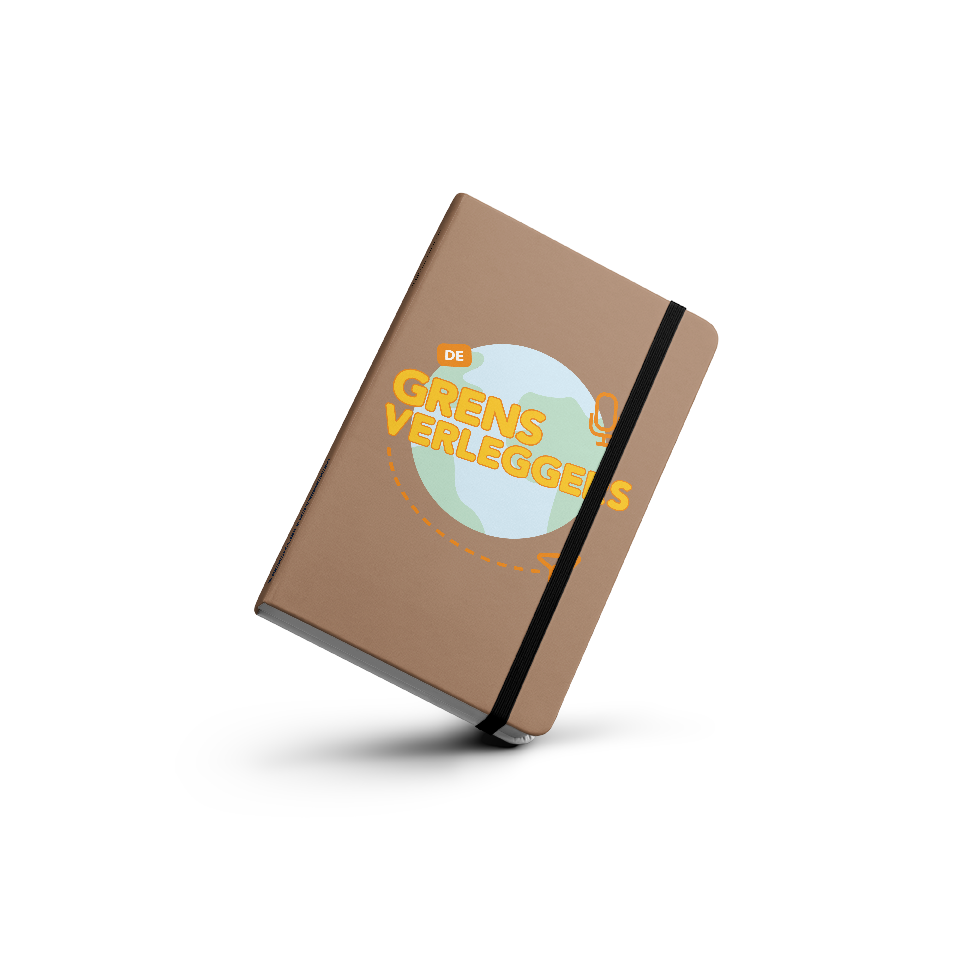

Ons doel met deze podcast is om jou te helpen met je stage of reis naar het buitenland. Wij zoeken uit wat je moet regelen qua documenten en vervoer, maar ook met hoe je je in andere landen moet gedragen. Hier hebben we het dan over dingen, zoals culturele gewoontes of sociale verwachtingen, zoals hoe je mensen beleefd aanspreekt, of speciale regels tijdens het eten. Zo lijkt het al heel wat minder intimiderend om naar het buitenland te gaan, toch?

Bekijk hier de teaservideo.
Reviews
Leuke podcast om in de trein naar te luisteren. Ik leer graag wat nieuws over andere culturen
Super veel geleerd van deze podcast! Ik wist precies wat ik nodig had toen ik naar Chili wilde.
Lekker interessant gewoon. Heeft goed geholpen met mijn stage.